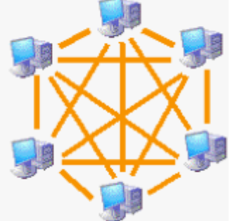

Fundamentos de Redes Informáticas
¿Qué es una Red?
Una red informática es un sistema de interconexión entre dispositivos electrónicos (computadoras, servidores, routers, switches, etc.) que permite compartir recursos, información y servicios mediante protocolos de comunicación estandarizados.
Características Clave:
- Comunicación: Permite el intercambio de datos entre dispositivos.
- Recursos compartidos: Impresoras, almacenamiento, conexión a Internet.
- Protocolos: Conjunto de reglas que gobiernan la comunicación (TCP/IP, HTTP, FTP).
- Topología: Disposición física o lógica de los dispositivos.
- Escalabilidad: Capacidad de crecer según necesidades.
Ejemplos Prácticos:
- Red doméstica (WiFi para conectar celulares, laptops, smart TV)
- Red corporativa (oficinas interconectadas en una empresa)
- Internet (la red de redes global)
Dirección IP
Una dirección IP (Internet Protocol) es un identificador numérico único asignado a cada dispositivo conectado a una red que utiliza el protocolo IP para comunicarse.
Tipos de Direcciones IP:
- IPv4: Formato de 32 bits (4 octetos), ej. 192.168.1.1
- IPv6: Formato de 128 bits, ej. 2001:0db8:85a3::8a2e:0370:7334
- Pública: Visible en Internet, asignada por el ISP
- Privada: Usada en redes locales (rangos reservados)
- Dinámica: Cambia periódicamente (asignada por DHCP)
- Estática: Fija, configurada manualmente
Clases de Redes por Dirección IP (IPv4)
| Clase | Rango | Máscara | Uso |
|---|---|---|---|
| A | 1.0.0.0 - 126.255.255.255 | 255.0.0.0 | Grandes corporaciones |
| B | 128.0.0.0 - 191.255.255.255 | 255.255.0.0 | Empresas medianas |
| C | 192.0.0.0 - 223.255.255.255 | 255.255.255.0 | Pequeñas redes |
| D | 224.0.0.0 - 239.255.255.255 | - | Multicast |
| E | 240.0.0.0 - 255.255.255.255 | - | Experimental |
| Loopback | 2127.0.0.0 a 127.255.255.255 | 127.0.0.1 | Probar el stack TCP/IP del propio dispositivo, desarrollar aplicaciones de red sin hardware externo, aceder a servicios locales (ej: servidor web en tu PC) |
Subredes y CIDR
Las redes pueden dividirse en subredes usando máscaras de red. La notación CIDR (Classless Inter-Domain Routing) indica el número de bits para la red (ej. 192.168.1.0/24).
Clasificación de Redes por Cobertura
Las redes se clasifican según su alcance geográfico y tamaño:
Tipos de Redes por Alcance:
| Tipo | Alcance | Velocidad | Tecnologías | Ejemplo | Imagen |
|---|---|---|---|---|---|
| PAN | 10 metros | 1 Mbps - 2 Gbps | Bluetooth, Zigbee, USB | Conexión smartphone-audífonos | |
| LAN | Hasta 1 km | 10 Mbps - 10 Gbps | Ethernet, WiFi | Red de oficina o casa | |
| CAN | Cubre varios edificios dentro de un campus (1-5 km). | 1 Gbps- 10 Gbps | MFibra óptica, Ethernet, WiFi | Universidad con redes separadas en facultades, conectadas a un núcleo central. | |
| MAN | Ciudad entera | 1 Gbps - 100 Gbps | Fibra óptica, Metro Ethernet | Red universitaria | |
| WAN | Países/Continentes | 1 Mbps - 100 Gbps | MPLS, Frame Relay, Satélite | Internet |
Comparativa de Tecnologías:
- Ethernet: Estándar para LANs cableadas (IEEE 802.3)
- WiFi: Para LANs inalámbricas (IEEE 802.11)
- Fibra óptica: Alta velocidad para MAN/WAN
- DSL/Cable: Conexiones domésticas a Internet
Topologías de Red
La topología de red define cómo están interconectados los dispositivos:
Tipos de Topologías:
| Topología | Ventajas | Desventajas | Uso Típico | Imagen |
|---|---|---|---|---|
| Estrella | Fácil administración, fallos localizados | Dependencia del nodo central | Redes domésticas, oficinas | |
| Anillo | Rendimiento consistente | Un fallo afecta toda la red | Redes token ring (obsoleto) | |
| Doble anillo | Tolerancai a fallos | Mayor complejidad | Redes token ring (obsoleto) | |
| Bus | Simple, bajo costo | Difícil diagnóstico de fallos | Redes antiguas (10Base2) | |
| Malla | Alta redundancia | Costo elevado | Redes críticas, militar |  |
| Árbol | Escalable | Dependencia de raíz | Redes empresariales |  |
| Híbrida | Adaptabilidady flexibilidad | Complejidad y mantenimiento | Redes token ring o redes empresariales jerárquicas |
Topologías Lógicas vs Físicas:
- Física: Cómo están conectados físicamente los dispositivos
- Lógica: Cómo fluyen los datos (puede diferir de la física)
Tipos de Cables y Normas
Los cables son el medio físico que transporta las señales en una red:
Cables de Par Trenzado:
| Tipo | Descripción | Uso | Velocidad |
|---|---|---|---|
| UTP (Unshielded Twisted Pair) | Sin blindaje, pares trenzados | Redes Ethernet | Hasta 10 Gbps |
| STP (Shielded Twisted Pair) | Con blindaje metálico | Entornos industriales | Hasta 10 Gbps |
| FTP (Foiled Twisted Pair) | Blindaje general | Entornos con interferencias | Hasta 10 Gbps |
Categorías de Cable UTP:
- Cat5: 100 Mbps (obsoleto)
- Cat5e: 1 Gbps (el más común)
- Cat6: 10 Gbps hasta 55 m
- Cat6a: 10 Gbps hasta 100 m
- Cat7: 10 Gbps con mejor blindaje
Normas de Cableado RJ45:
| Pin | T568A | T568B |
|---|---|---|
| 1 | Blanco/Verde | Blanco/Naranja |
| 2 | Verde | Naranja |
| 3 | Blanco/Naranja | Blanco/Verde |
| 4 | Azul | Azul |
| 5 | Blanco/Azul | Blanco/Azul |
| 6 | Naranja | Verde |
| 7 | Blanco/Marrón | Blanco/Marrón |
| 8 | Marrón | Marrón |